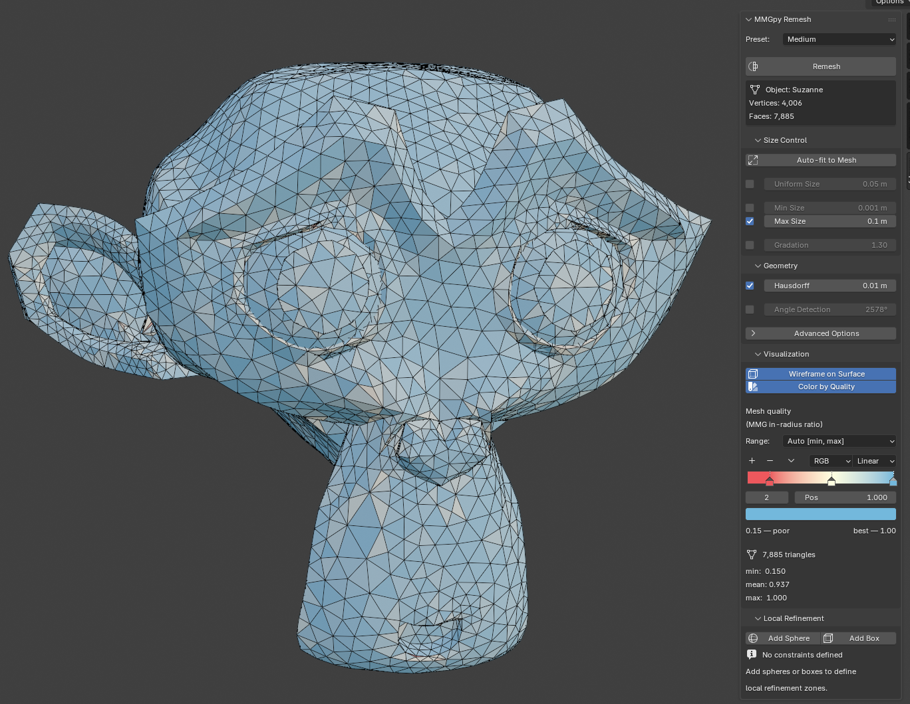
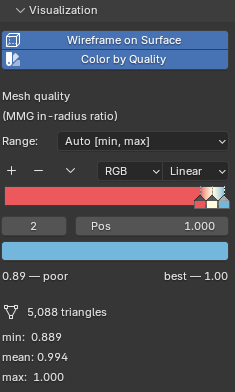

Blender extension¶
mmgpy ships a Blender 4.2+ add-on that exposes the remeshing pipeline
through Blender's UI — no scripting required. Under the hood it builds
a pyvista.PolyData from the active mesh and runs
polydata.mmg.remesh(...) against PyVista's .mmg accessor,
so every option that's available from Python is reachable from the
N-panel.
Requirements
- Blender 4.2+ (uses the new Extensions system)
- The released zips bundle mmgpy and every transitive dependency
(numpy, pyvista, scipy, vtk, matplotlib, …). No separate
pip installis needed inside Blender's Python.
Install¶
Option 1 — extensions.blender.org (recommended once published)¶
Search for MMGpy in Blender's Edit → Preferences → Get Extensions browser, click Install. Blender picks the right platform / Python-ABI zip automatically and handles updates.
Option 2 — install a zip from a GitHub release¶
Each tagged release on GitHub releases publishes one zip per (platform, Python ABI) combination. Pick the row that matches your Blender install:
| Filename suffix | Blender versions | Python ABI |
|---|---|---|
*-linux-x64-py3.11.zip |
4.2 LTS — 4.5 | 3.11 |
*-windows-x64-py3.11.zip |
4.2 LTS — 4.5 | 3.11 |
*-macos-arm64-py3.11.zip |
4.2 LTS — 4.5 | 3.11 |
*-linux-x64-py3.13.zip |
5.x | 3.13 |
*-windows-x64-py3.13.zip |
5.x | 3.13 |
*-macos-arm64-py3.13.zip |
5.x | 3.13 |
Then in Blender:
- Edit → Preferences → Get Extensions.
- Click ▼ at the top-right and choose Install from Disk….
- Select the downloaded zip.
- Confirm the install in Add-ons → MMGpy; the status box shows the bundled mmgpy + MMG versions.
Each zip is ~150 MB — the bulk is VTK (~60 MB), SciPy (~40 MB), NumPy (~15 MB), and matplotlib (~10 MB).
Where the UI lives¶
Open the 3D Viewport sidebar with N and switch to the MMGpy tab. The main panel has four collapsible sub-panels:
- Size Control —
hmin/hmax/hsiz/ gradation - Geometry — Hausdorff distance, angle detection, advanced flags
- Visualization — wireframe overlay and quality colormap
- Local Refinement — sphere / box Empties as refinement zones

Basic remesh¶
- Select a mesh object.
- (Optional) hit Auto-fit to Mesh in the Size Control panel — it
sizes
hmin/hmax/hsiz/hausdto a power of 10 matching the object's bounding-box diagonal. - Pick a preset (Fine / Medium / Coarse) or tweak the sliders.
- Click Remesh at the top of the panel.
| Preset | Gradation override | Notes |
|---|---|---|
| Fine | hgrad=1.2 |
high quality, smaller elements, tight transitions |
| Medium | default | balanced quality and performance |
| Coarse | hgrad=1.5 |
fast remeshing, larger elements |
| Custom | manual | full control over every parameter |
The operator declares REGISTER, UNDO so a remesh is one Ctrl+Z
away from the previous mesh state.
High-triangle confirmation
If the estimated output element count (computed from the active
hsiz / hmax and the mesh's surface area) exceeds 1,000,000, a
confirmation dialog asks whether to proceed. This is to keep
Blender's UI from locking up on inadvertently-huge inputs.
Local refinement zones¶
Use Empties as refinement zones. Each one becomes a local_sizing
entry on the .mmg.remesh call.
- Expand Local Refinement.
- Click Add Sphere or Add Box. An Empty is created at the active object's location.
- Move / scale the Empty. Its
empty_display_sizecontrols the sphere radius or box half-extent. - Set the Empty's per-zone Target Size.
- Repeat as needed, then Remesh.
Behind the scenes each constraint maps to
{"shape": "sphere", "center": [...], "radius": ..., "size": ...}
# or
{"shape": "box", "bounds": [...], "size": ...}
in the local_sizing=[...] kwarg.
Quality visualisation¶
Two independent toggles in the Visualization sub-panel:
Wireframe on Surface¶
Flips obj.show_wire and obj.show_all_edges on the active mesh, so
the wireframe overlays the shaded surface in every viewport shading
mode. Persists across remeshes (the operator re-pokes the flag after
swapping the mesh data so the viewport's overlay cache refreshes).
Color by Quality¶
Computes MMG's in-radius-ratio quality per triangle, writes
the values to a mmgpy_quality FACE-domain attribute, and assigns a
shared MMGpy_Quality material whose shader graph is
Attribute → ColorRamp → Principled BSDF. The ColorRamp is rendered
live in the panel via template_color_ramp, so the gradient you
see on the mesh is the gradient the material is using — and you can
drag the stops to re-grade in place.
The palette is ColorBrewer's RdYlBu: red = poor, yellow = middling, blue = excellent. Toggling the option flips the viewport to Material Preview if it isn't already on a material-aware shading mode.
Three range modes:
| Mode | Ramp stops at | Use case |
|---|---|---|
| Absolute [0, 1] | 0.0 / 0.5 / 1.0 |
Universal scale (0 = degenerate, 1 = equilateral) |
| Auto [min, max] | actual min / midpoint / max |
Emphasises in-mesh variation |
| Custom [min, max] | user-set bounds | Compare two meshes on a fixed scale |
A stats block underneath shows the active mesh's min / mean /
max plus the triangle count.
Quality coloring requires an all-triangle mesh
Fresh remesh output is always all-triangle, so the feature works
out-of-the-box after Remesh. For meshes with ngons / quads,
triangulate first (Ctrl + T in Edit Mode).

Building from source¶
For most users the released zips are the right path. To build locally
against an unreleased mmgpy version, the canonical pipeline lives in
.github/workflows/build-blender-extension.yml.
In short:
# 1. Build the mmgpy wheel into ./blender_mmgpy/wheels
uv build --wheel --out-dir blender_mmgpy/wheels
# 2. Fill in transitive deps for the target ABI + platform
cd blender_mmgpy
pip download mmgpy \
--find-links wheels --dest wheels \
--only-binary :all: \
--python-version 3.13 \
--platform win_amd64 --platform any # adjust for your platform
# 3. Inject `wheels = [...]` into the manifest (see CI workflow for
# the snippet) and let Blender package the zip
blender --command extension build --source-dir . --output-dir .
The ./build.sh script wraps the upstream
blender-extension-builder tool, which is the recommended
path for released versions of mmgpy. It doesn't work for dev
versions because it tries to pip download mmgpy from PyPI; the
manual pipeline above is what the CI release workflow uses.
TODOs / Known limitations¶
- Long-running remeshes lock the UI. The operator runs
synchronously on Blender's main thread, so a 1M-triangle remesh
freezes the viewport for tens of seconds. mmgpy exposes
progress=callbacks that could feed Blender'swm.progress_*family for a real progress bar; not wired up yet. - Custom palette resets on every refresh. Whenever the colormap range or stats change, the ColorRamp is rebuilt from the canonical RdYlBu endpoints. Per-stop edits made directly in the ramp widget are lost.
- No unit tests for
blender_mmgpy/. The bpy-dependent code is hard to test without Blender installed; the pure helpers (arrays_to_polydata,polydata_to_arrays,is_all_triangles) could be split out and tested but haven't been yet. - Quality coloring is in-radius ratio only. MMG itself exposes
one quality metric. PyVista's
cell_quality(quality_measure=…)ships ~20 more (scaled_jacobian,aspect_ratio,skew, …) that could be surfaced as another panel dropdown.
Troubleshooting¶
"mmgpy is not installed" in the Add-ons preferences¶
The bundled wheels didn't match Blender's Python ABI. Use the
py3.11 zip for Blender 4.x and the py3.13 zip for Blender 5.x.
If the version still looks wrong, Disable → Re-enable the
add-on (forces a Python module reload).
Quality coloring shows the panel but the mesh stays solid grey¶
Two possibilities:
- Your viewport is on Solid or Wireframe shading — materials are invisible there. The add-on auto-switches to Material Preview on enable, but only on the screen's currently visible 3D viewports. Toggle the option off / on if a viewport was created after enabling.
- Your mesh isn't all triangles. Check the system console for the
"Quality visualisation requires an all-triangle mesh" warning;
triangulate via
Ctrl + Tin Edit Mode and re-enable.
Licensing¶
The extension is GPL-3.0-or-later because it links against
Blender's bpy API (Blender itself is GPL-2.0-or-later, so anything
that imports bpy inherits a GPL-compatible licensing requirement).
The bundled MMG library is LGPL-3.0-or-later, and mmgpy itself is
MIT. See the SPDX headers and the manifest's license field for the
exact identifiers.